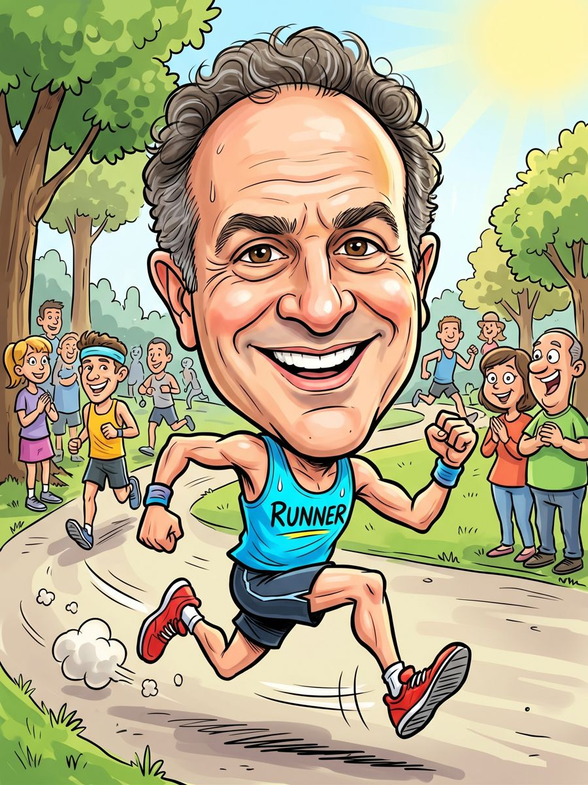
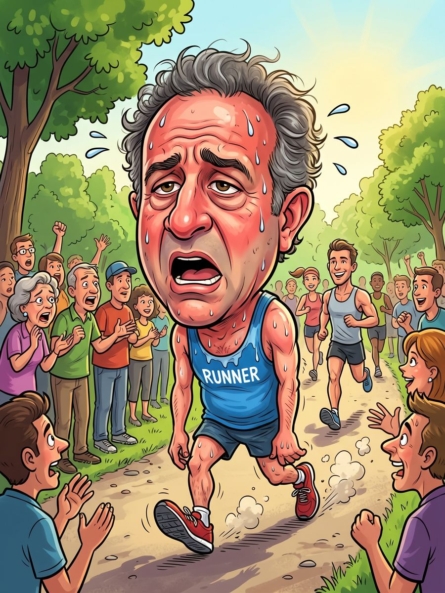

Kilometres up 100% on last week, which was zero. Knees have issued a profit warning. Management remains confident.


0 mAJ
- Age
- 52
- Marathons completed
- 1 (mentions it daily)
- Personal best
- 4:14 (also his worst)
- Strengths
- Spreadsheets, pacing the buffet
- Race strategy
- Start slow, then taper off